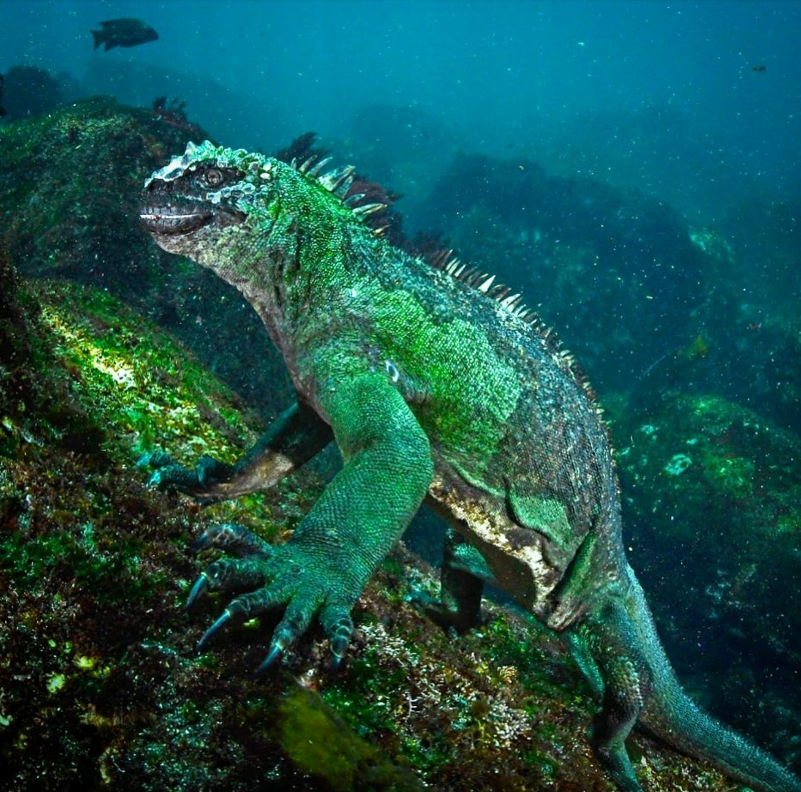
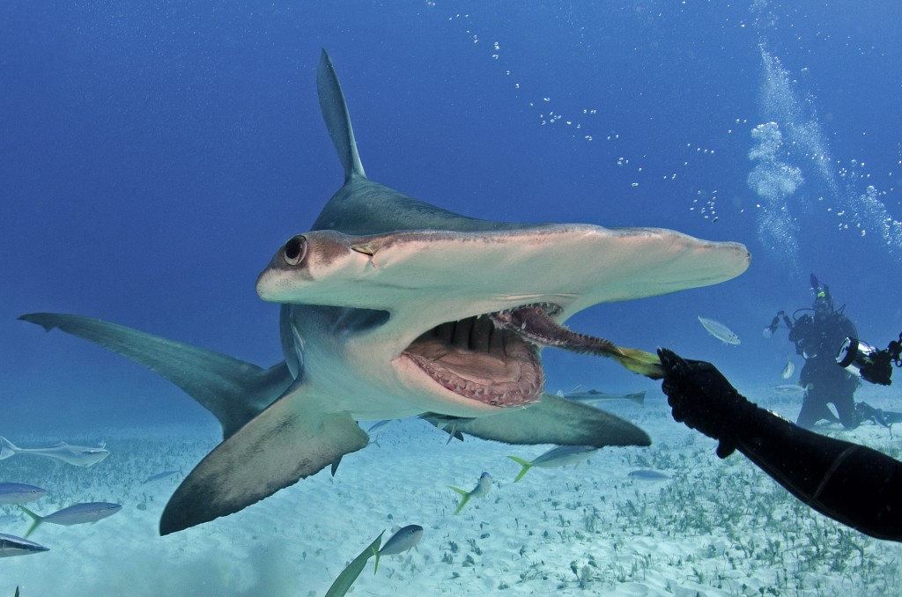
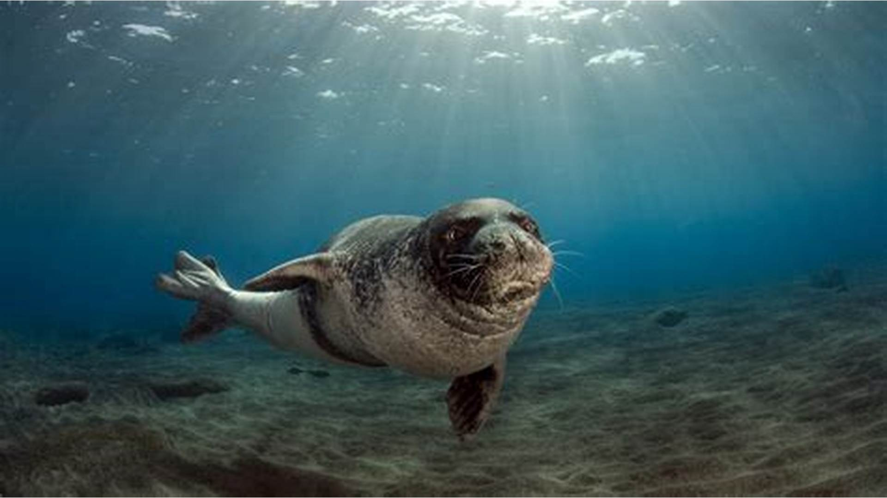
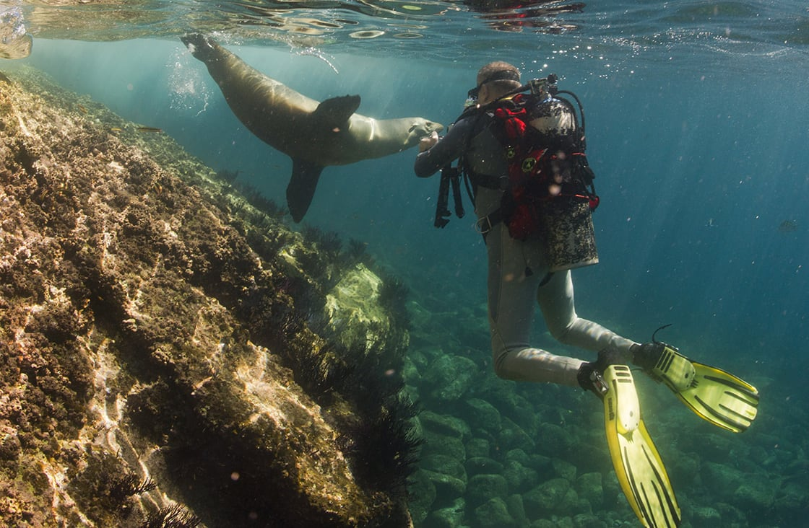

Discover the Unique Marine Life of the Galapagos Islands
The Galapagos Islands offer one of the most unique underwater ecosystems in the world. Known for its diverse species, some of which are found nowhere else on Earth, the islands are a dream destination for scuba divers looking to explore pristine underwater environments.
Some of the Iconic Aquatic Life

Marine Iguana

Hammerhead Shark

Galapagos Sea Lion
Other Incredible Species
- Galapagos Tortoise
- Whale Sharks
- Golden Rays
- Pelagic Fish
- Various species of Manta Rays
Stunning Underwater Photography
A breathtaking underwater view of the Galapagos' colorful reefs, showing vibrant marine life in their natural habitat.